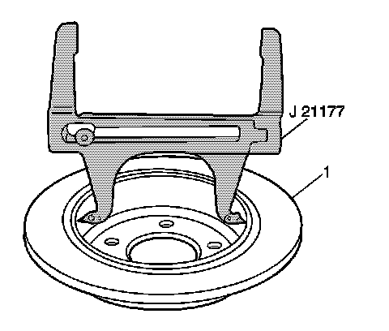
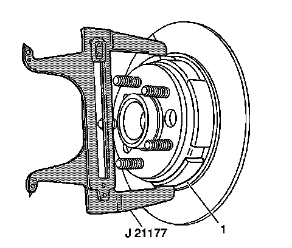

Parking Brake System: Adjustments
Park Brake Adjustment
Tools Required
J 21177-A Drum-to-Brake Shoe Clearance Gage
Park Brake Shoe Adjustment
Caution: Refer to Brake Dust Caution.
Important: The park brake shoes must be adjusted before the park brake cable tension is adjusted.

1. Set the J 21177-A so that it contacts the inside diameter of the rotor.

2. Position the J 21177-A over the shoe and the lining at the widest point.
3. Turn the adjuster nut until the lining just contacts the J 21177-A.
4. Repeat steps 1-3 for the opposite side.
5. The clearance between the park brake shoe and the rotor is 0.6604 mm (0.026 in).
Park Brake Cable Tension Adjustment
Important: Before you adjust the park brake cable tension, verify that the park brake shoes are adjusted to provide a clearance of 0.6604 mm (0.026 in) and the rear disc brake rotors are installed.
1. Verify the self adjuster lock-out pin has been removed.
2. Fully apply and release the park brake pedal 3 times.